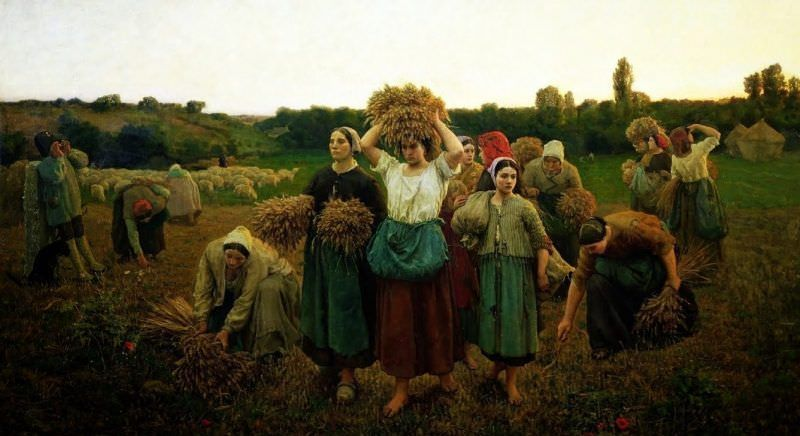

Arte do Real
Naturalismo
O Naturalismo é uma escola literária que se desenvolveu no final do século XIX, derivada do Realismo, mas com características próprias que acentuam a visão determinista e cientificista da realidade. Essa corrente literária surgiu na França e se espalhou para outros países, tendo como principal precursor o escritor francês Émile Zola.
Realismo
O realismo foi um movimento artístico e literário surgido nas últimas décadas do século XIX na Europa, mais especificamente em França, em reação ao romantismo. Entre 1850 e 1900 o movimento cultural, chamado realismo, predominou em França e se estendeu pela Europa e outros continentes.
Parnasianismo
Parnasianismo é uma escola literária que surgiu na França, na segunda metade do século XIX, como uma reação ao subjetivismo e ao sentimentalismo do Romantismo. Ele se desenvolveu em paralelo ao Realismo e Naturalismo na prosa, mas se destaca especialmente na poesia.

Contexto Histórico Naturalismo
O Naturalismo surgiu como uma evolução do Realismo,(final do século XIX) incorporando uma visão ainda mais científica e determinista da realidade. Ele se desenvolveu em um contexto de grandes transformações sociais e científicas, influenciado pelas teorias de Charles Darwin sobre a evolução e pelo positivismo de Auguste Comte.A Revolução Industrial estava em pleno andamento, trazendo urbanização acelerada, crescimento das cidades e mudanças significativas nas condições de vida das pessoas, especialmente da classe trabalhadora. Esses fatores inspiraram escritores naturalistas a explorar temas como a degradação social, o instinto e a hereditariedade, buscando retratar a vida humana como produto de forças biológicas e sociais incontroláveis.
Linha do Tempo
1850
O Naturalismo começa a se desenvolver na França, influenciado pelo Realismo e pelas teorias científicas da época, especialmente o determinismo.
1867
Publicação de "Thérèse Raquin" de Émile Zola, considerado um dos primeiros romances naturalistas, que explora a influência do ambiente e da hereditariedade sobre os personagens.
1870
Zola publica o manifesto "O Romancista" (Le Roman Experimental), onde defende a abordagem científica na literatura e a observação rigorosa da realidade.
1871-1893
Publicação da série "Os Rougon-Macquart", composta por 20 romances que detalham a vida de uma família durante o Segundo Império Francês, abordando temas como classe social, hereditariedade e ambiente.
1880
O Naturalismo se espalha para outros países, incluindo o Brasil, onde autores como Aluísio Azevedo começam a adotar essa abordagem em suas obras.
1888
Lançamento de "O Mulato" de Aluísio Azevedo, uma das obras fundadoras do Naturalismo no Brasil, que retrata questões raciais e sociais.
1890
Publicação de "Casa de Pensão" de Aluísio Azevedo, que explora a vida urbana e as relações sociais em um pensionato.
1900
O Naturalismo começa a perder força com o surgimento de novos movimentos literários, como o Modernismo, que trazem novas abordagens e estilos.
Exemplo de obra
- Titulo: O cortiço
- Autor: Aluísio Azevedo
- Sobre a obra: “O Cortiço” é um romance escrito por Aluísio Azevedo que tem como cenário e personagem principal uma habitação coletiva de pessoas pobres. O autor conta sobre a rotina e as relações dos personagens que nela vivem, explicando seus comportamentos a partir das influências do meio-ambiente, da raça e do contexto histórico.
Características Linguísticas
Impessoal, simples, clara, objetiva, equilibrada, harmônica, descritiva, minuciosa, coloquial, regionalista, engajada.
Contexto Histórico Realismo
O Realismo surgiu na Europa em meados do século XIX, (segunda metade do século XIX) como uma reação ao Romantismo, que era caracterizado por idealizações e subjetivismo. No contexto do Realismo, os autores buscaram representar a realidade de maneira objetiva, sem idealizações, com uma atenção especial aos detalhes do cotidiano e à análise crítica da sociedade.Esse movimento está profundamente ligado ao crescimento das cidades, à ascensão da burguesia e às novas correntes filosóficas e científicas, como o positivismo e o materialismo. A literatura realista focou na vida das classes média e alta, explorando temas como o adultério, a hipocrisia social, e a desigualdade.
Linha do Tempo
1840
Surgimento do Realismo na Europa, como uma reação ao Romantismo. O movimento busca retratar a realidade de forma objetiva e fiel.
1845
Publicação de "Madame Bovary" de Gustave Flaubert, considerado um dos romances fundadores do Realismo.
1850
Os primeiros manifestos realistas começam a ser escritos, defendendo a representação da vida cotidiana e das classes sociais.
1856-1860
Publicação da série de romances "Os Rougon-Macquart" de Émile Zola, que explora a vida da classe trabalhadora e a influência do meio social sobre os indivíduos.
1863
O Salon des Refusés (Salão dos Recusados) em Paris apresenta obras de artistas que desafiam o estilo acadêmico tradicional, incluindo o realismo na pintura.
1870
O Realismo se consolida como um movimento importante nas artes visuais, com artistas como Gustave Courbet defendendo a pintura de cenas da vida cotidiana.
1880
O Realismo começa a dar lugar ao Naturalismo, que é uma vertente mais científica e determinista dentro do Realismo.
1890
O movimento começa a perder força com o surgimento do Simbolismo e outros movimentos artísticos que priorizam a subjetividade e a emoção.
Exemplo de obra

- Título:Memórias Póstemas de Brás Cubas
- Autor:Machado de Assis
- Sobre a obra:Pertencente a uma família abastada do século XIX, Brás Cubas narra primeiramente sua morte e enterro onde apareceram onze amigos. Por conseguinte, ele relata diversos momentos de sua vida, desde eventos da sua infância, adolescência e fase adulta.
Características Linguísticas
Linguagem Objetiva e Descritiva, vernáculo e diálogo verossímil, narrador onisciente, tom Impessoal e neutro, foco no cotidiano, detalhismo e minúcia, crítica social implícita.
Contexto Histórico Parnasianismo
O Parnasianismo surgiu na França, no final do século XIX, como uma reação contra o subjetivismo do Romantismo e o envolvimento social do Realismo e Naturalismo. Este movimento literário valorizava a arte pela arte, defendendo o culto à forma perfeita e à objetividade. Influenciado pelo positivismo e pelo cientificismo da época, o Parnasianismo focava na construção rigorosa dos versos, na impessoalidade e na neutralidade emocional.
Linha do Tempo
1866
Publicação do poema "A Música" de Olavo Bilac, que marca a primeira manifestação clara do Parnasianismo no Brasil.
1876
O termo "Parnasianismo" é utilizado pela primeira vez pelo crítico literário francês Leconte de Lisle em sua obra "Poesias", referindo-se a um grupo de poetas que buscavam a perfeição estética.
1880
Lançamento da revista "Revista Brasileira", que se torna um importante veículo para a divulgação das ideias parnasianas no Brasil.
1881
Publicação da coletânea "Poesias" de Olavo Bilac, que solidifica sua posição como um dos principais poetas parnasianos.
1888
Lançamento da obra "O Livro de Ouro" de Bilac, que reúne poemas que exemplificam os princípios parnasianos, como a busca pela forma perfeita e a impessoalidade.
1893
Publicação da obra "O Casamento de Nela" de Alberto de Oliveira, outro importante poeta do movimento, que explora temas do cotidiano com rigor formal.
1897
A morte de Olavo Bilac, um dos principais representantes do Parnasianismo, marca o início do declínio do movimento.
1902
Publicação da coletânea "Poesias Completas" de Alberto de Oliveira, consolidando sua importância na literatura parnasiana.
Exemplo de obra
- Título:Poemas e Canções
- Autor:Vicente de Carvalho
- Sobre a obra:Seus versos apresentam temas como o amor, a morte, a natureza e em especial o mar.
Características Linguísticas
Rigor formal e métrica perfeita, linguagem impessoal e objetiva, culto à beleza e ao esteticismo, descrição detalhada e imagens visuais, imparcialidade e ausência de sentimentalismo, uso de alusões clássicas e mitológicas, valorização da arte pela arte